Manual
How to play, sequence, route and record your synths from the SP-404MKII.
Experimental. Modified firmware can brick your SP-404MKII. This is tested on one unit only, with Roland 5.52 and DOOM OS 0.6.2-alpha (build 3824), and it changes some of Roland's own routines. Keep Roland's original files so you can go back.
Quick start
Six steps from a freshly patched SP to a synth that plays and moves. Install first: see the patcher.
- Set up the SP. Set MIDI Mode to A and turn MIDI Through off. See SP settings.
- Connect. Run a MIDI cable from the SP's MIDI output to your synth's MIDI input. Most synths need a TRS-to-DIN adaptor, Type A (see Bigger setups). Note the channel your synth listens on.
- Add the synth. SHIFT + REMAIN, open DEVICES. CTRL 2 names device 1, CTRL 3 sets its channel to your synth's.
- Give it a pad. EXIT, open PADS, tap a pad and turn CTRL 1 to device 1. Hit the pad and the synth plays.
- Turn its dials. SHIFT + FX1 turns MIDI Controls on. Press MARK, set CTRL 1's device with CTRL 1 and its CC with CTRL 2, press MARK again. Now CTRL 1 moves that control on the synth.
- Record a sweep. Start a pattern, press SHIFT + VALUE and turn the dial. It plays back on every loop.
SP settings
Two settings in the SP's own SYSTEM settings change how MIDI Conductor behaves. Set them before you start.
MIDI Mode: set it to A (essential)
In mode B the SP spreads the banks over a keyboard range, so each bank sends higher notes than the one before and bank E sounds several octaves too high on a synth. In mode A every bank sends the same 16 notes. Switch to mode A and the problem goes away.
The SP sends a pad's note by its position in the bank and not by its number, so notes rise along a row and each row down is lower: pads 1 to 4 send 48 to 51, pads 5 to 8 send 44 to 47, pads 9 to 12 send 40 to 43 and pads 13 to 16 send 36 to 39. That is how the SP does it, and the patch doesn't change it.
MIDI Through: turn it off (recommended)
With MIDI Through on, the SP also passes what it receives straight to its MIDI output. That is in addition to anything the patch routes or plays, so a synth can hear the same notes twice, and a synth that echoes MIDI back can set up a loop. Turn it off and let the ROUTES grid decide what goes where.
Reading the screens
Every MIDI screen has a title bar and a help line at the bottom. On the help line, a word on a lit box is a control on the SP and the plain words after it are what it does: VALUE CHANGES BANK means turn VALUE to change bank. C1, C2 and C3 are CTRL 1, 2 and 3.
MIDI SETTINGS
SHIFT + REMAIN opens the MIDI SETTINGS menu from any DOOM screen, with MIDI Controls on or off.
| Entry | For |
|---|---|
| PADS | Which synth or channel each pad plays |
| DEVICES | Your synths: name and channel |
| ROUTES | Pass MIDI from one synth to another |
| PATTERN | Clear the current pattern's recorded dial moves |
Turn VALUE to pick, press it to open. EXIT goes back a level; in the menu it closes it.
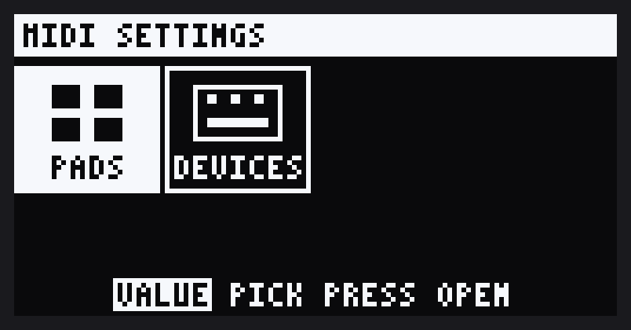
Devices and pads
A device is one of your synths: a name and a channel. Point pads and CTRLs at a device rather than a bare channel, and when you change the synth's channel you change it once, in DEVICES. There are seven devices.
DEVICES
- CTRL 1 (or VALUE) picks the device, 1 to 7.
- CTRL 2 names it: your synths from the CC lists first, then DRUMS, BASS, KEYS, SYNTH, LEAD, PAD and FX.
- CTRL 3 sets the channel, 1 to 16. All the way down is
--, no channel.
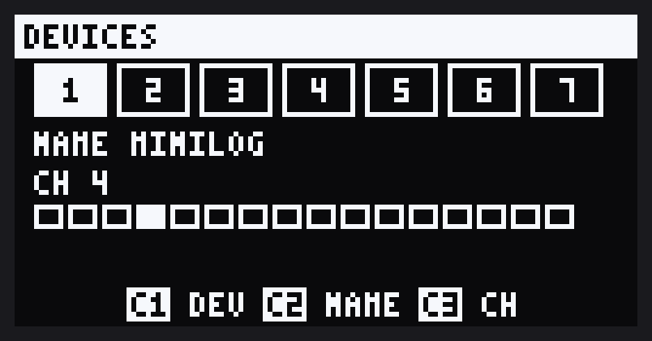
PADS
Each pad sends its notes on its own channel. A pad with no channel sends nothing.
- Turn VALUE to pick the bank, A to J, and tap a pad. The square shows which, for example C4.
- CTRL 1 assigns it: devices 1 to 7 first, then channels 1 to 16. CTRL 3 clears it.
- The screen shows
DEV MINILOG,CH 5orNOT SET.CH NOT SETmeans the pad's device has no channel yet.
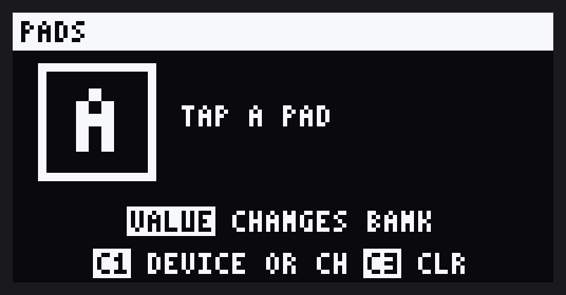
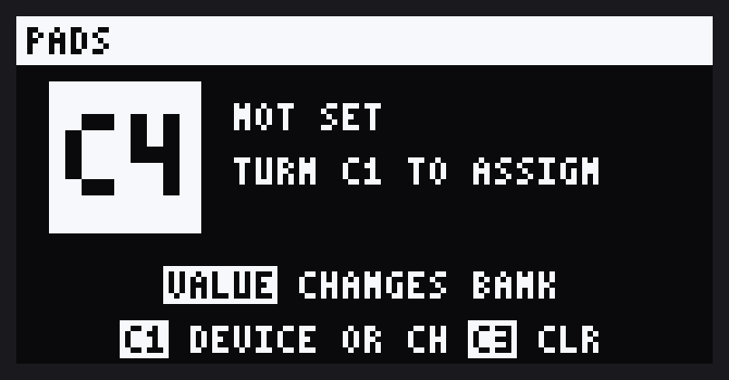
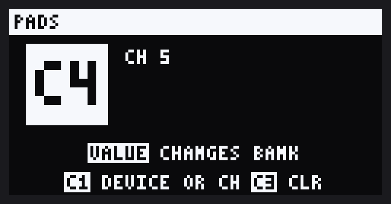
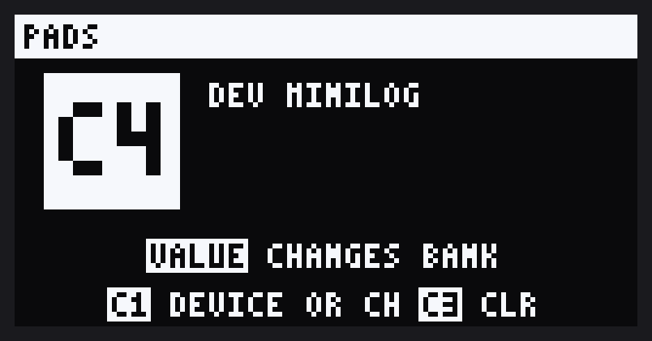
CC lists
Name a device after a synth the SP knows and its CTRLs pick controls by name, CUTOFF instead of CC 43. Any other synth still works with CC numbers.
Choose the synths in the patcher before you build: + Add a synth, ✕ to remove. They take the device name slots in that order. The first seven also fill devices 1 to 7, with their usual channel where they have one, unless you have set that device up already.
| Maker | Synths (device name) |
|---|---|
| Audiothingies | MicroMonsta 2 (MM2). For its second part, add a second MM2 device on the next channel. |
| Behringer | TD-3-MO (TD-3-MO): cutoff and accent only. Grind (GRIND): only the ASSIGN output follows CC, one at a time; set ASSIGN mode 13 to 16 for CC 1, 2, 4 or 7. |
| Elektron | Digitone II (DT2). Synth pages are numbered SYN 1A to 4H because they depend on the machine. Each track has its own channel. |
| Korg | Minilogue (MINILOG), NTS-1 (NTS-1), volca Keys, Nubass, Beats, Sample, FM and Kick (VKEYS, VNUBASS, VBEATS, VSAMPLE, VFM, VKICK). Volcas need MIDI RX ShortMessage on to take CC. |
| Novation | Bass Station II (BS2): every control that has a CC number. Waveforms, envelope modes and the mod wheel can only be set by NRPN, so they are not listed. |
| Roland | S-1 Tweak Synth (S-1), on channel 3. |
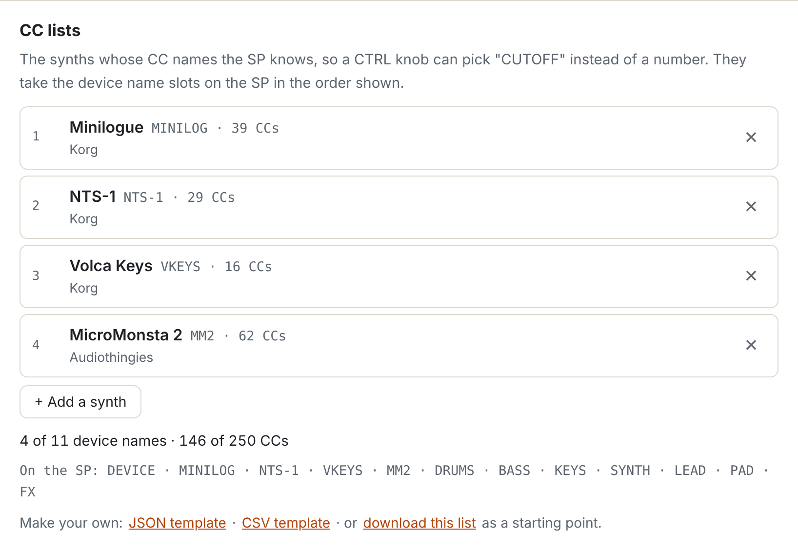
Your own synth
Download the JSON or CSV template under the list, fill in your synth's CCs and add the file. Names are 1 to 7 characters: A to Z, 0 to 9, space and - + . / #. Add a default channel with "channel": 3 in JSON or a fourth CSV column. There is room for 10 synth names of your own (the 11th is GHOST's) and 250 CC names. download this list saves your current choice to start from.
Sequencing synths
Every pad hit in a pattern goes out as a note on that pad's channel. Put pads on different synths and one pattern plays them all.
- Melodies: in the piano roll, each step's pitch is added to the pad's note.
- Note length follows the step's gate.
- Movement: record dial moves into the same pattern.
STOP and choke don't send note-off yet, so a note can hang. All-notes-off or panic on the synth clears it.
MIDI Controls
With MIDI Controls on, the CTRL dials send CC instead of changing the effect. There are 36 CTRLs: six banks of six.
- SHIFT + FX1..FX6 turns MIDI Controls on at that bank. The bank's FX key lights and the title bar shows it.
- VALUE flips between CTRL 1 to 3 (page 1/2) and CTRL 4 to 6 (page 2/2).
- EXIT turns MIDI Controls off.
Each row shows the CTRL, its value as a number and a bar, then its device or channel and its CC.

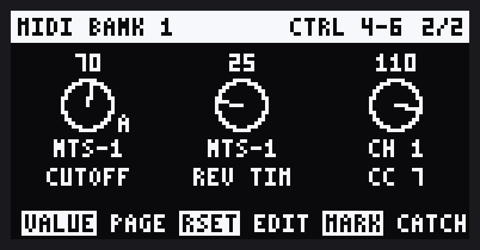
Editing a CTRL
MARK on the MIDI page starts editing. Turn VALUE to pick a CTRL, then:
- CTRL 1 sets its device (1 to 7) or channel (1 to 16).
- CTRL 2 sets its CC, by name for a synth with a CC list.
MARK again to finish. Settings are saved in DOOM OS's settings file.

Routing
One keyboard can play every synth in your rig. Notes and CC messages can be passed to and from any device with a MIDI DIN connection.
The SP sits in the middle. It receives MIDI on its MIDI input and sends it on from its MIDI output. Add each synth as a device, then use routes to choose which device feeds which.
The ROUTES grid
Rows are the synths that send (FROM, devices 1 to 7). Columns are where it goes (TO, devices 1 to 7, then SP). A lit cell is a route that's on.
- Turn VALUE to move cell by cell, or pick the row with CTRL 1 and the column with CTRL 2.
- CTRL 3 switches the cell on (up) or off (down).
- Play a synth and the cursor jumps to its row.
- Press VALUE to choose what the route passes. This also switches it on.

Light several cells in a row to send one synth to several. A synth with no routes plays the SP as normal. Once it has a route, the SP only hears it if the SP cell is lit too.
What a route passes
Four switches: NOTES, CC, BEND and PRES (aftertouch). Turn VALUE to pick, press to switch. A new route to a synth passes notes only, so a stray mod wheel doesn't reach it. A new route to the SP passes everything, program change included. Switch everything off and the route goes off.
Notes routed to the SP play the pad of the track DOOM OS is on (A11, say; turn VALUE on DOOM's page to pick another), pitched like the SP's own keyboard. The SP only takes notes C2 to C4 (36 to 60), so notes outside that are moved by octaves to fit. While DOOM OS is recording or rehearsing, the note is recorded too: it lands on the track DOOM is on, at the pitch you played (C3 is the sample as it was) and with the velocity you played, as if you had hit that pad. Hold it and release it for the note length. This applies to every device routed to the SP.

The CC map
Synths rarely share CC numbers, so CC to another synth passes only through the route's CC map: pairs of FROM dial and TO control. CC to the SP goes through a map too, to DOOM OS's mixer: each track's LVL, PAN, BUS, MUTE and SOLO, for tracks 1 to 16. MUTE and SOLO switch on at 64 and above and off below it. SOLO mutes every other track; switching it off clears all mutes. CC that isn't in the SP's map passes to it as it is.
- On the route screen, press CC to open the map (or MARK at any time).
- Turn the dial on the sending synth to fill in FROM, then set TO with CTRL 2. Or set both by hand with CTRL 1 and CTRL 2.
- Do it on + ADD to make a new pair. Turn VALUE to move between pairs.
- SHIFT + DEL removes a pair. CLEAR ALL, under + ADD, removes them all after asking.
Controls are named for a synth with a CC list. One dial can drive several controls: add a pair for each. Once a route has pairs, CC on the route screen switches them on and off without losing them; an empty map switches CC off. There is room for 64 pairs in all.
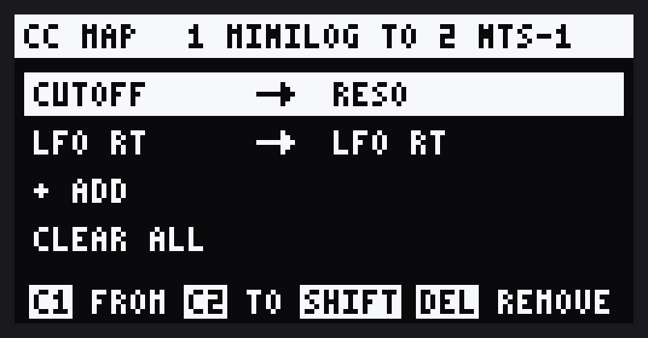
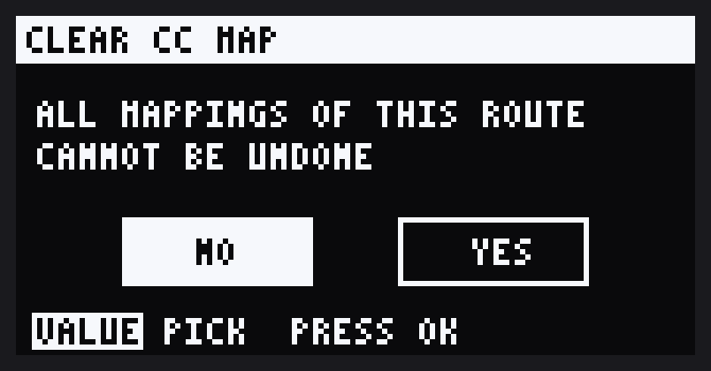
Routes and pairs are saved on the SP as you go.
Recording dial moves
Record CTRL moves into a pattern and they play back as CC on every loop. Each CTRL gets 64 points per pattern, so slow sweeps stay smooth.
- SHIFT + VALUE starts and stops recording with MIDI Controls on. The title bar shows
REC. - Moves play back whenever the pattern runs, with MIDI Controls on or off.
- Grab a CTRL during playback and you take over until the pattern loops.
- An A next to a CTRL means it has moves in this pattern.

Every pattern (A1 to J16) keeps its own moves, saved on the SP so they survive a power off.
Clearing moves
All of these clear the current pattern only.
- DEL + turn a CTRL: that CTRL.
- SHIFT + DEL + FX1..FX6: that bank's six CTRLs.
- PATTERN in MIDI SETTINGS: everything, after asking.
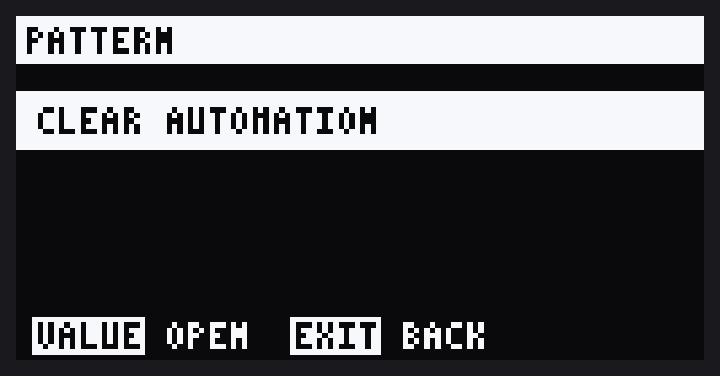
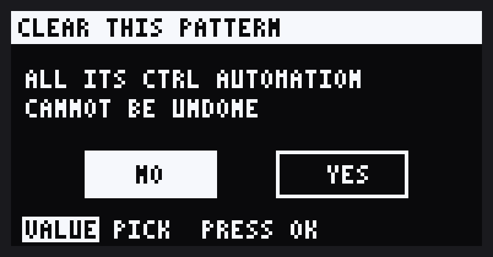
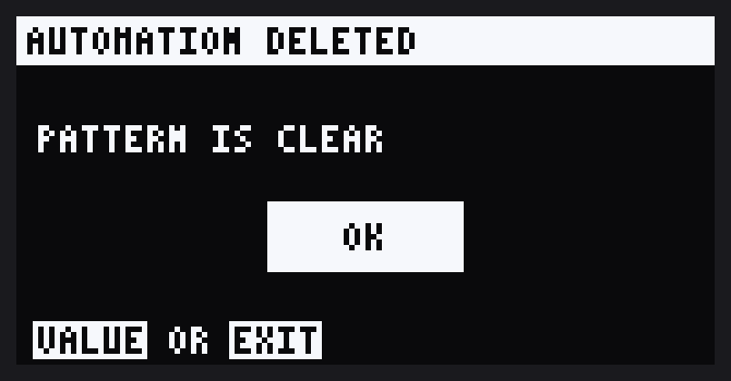
GHOST
There is a small synth inside the SP. It's called GHOST. It plays through DOOM OS's mixer like a pad, and you play it the way you play any other synth: from pads, patterns, MIDI Controls and routes.
Waking it
- On DOOM OS's page, press ROLL + REVERSE. GHOST wakes up.
- Press ROLL + REVERSE again to let it rest. While it rests it makes no sound, any note it was holding is let go, and ROLL + FX does what it does on the SP.
- GHOST is awake or resting per project, and the SP remembers it, so it is still there after a restart. Load a project where you never woke it and GHOST is resting.
Playing it
GHOST is a device named GHOST. A fresh setup has it as device 7. To add it yourself, name a device GHOST in DEVICES: it needs no channel, so its channel shows a dash. Then:
- Pads: set a pad to GHOST in PADS. Play the pad live or sequence it in a pattern.
- Dials: set CTRLs to GHOST in MIDI Controls. GHOST has its own CC list, with the Minilogue's CC numbers. It also has LEVEL (CC 7), so a dial can set its volume.
- Other synths: route a synth or keyboard to GHOST. Its CC goes through the CC map, like any other synth.
- Muting: a muted pad sends no notes from a pattern, to GHOST or to any synth. Notes you play live are not muted.
GHOST plays into BUS 1, so DOOM OS's bus effects reach it. If you rename the GHOST device, GHOST goes with the name.
Its screens
ROLL + FX1..FX6 opens a bank of settings. The oscilloscope fills the top of the screen and shows what GHOST is playing. It keeps one scale, so you see how loud it is as well as its shape: the wave swells and fades with the envelope and shrinks as you turn LEVEL down. The bank's name and the page number sit in its corners, and the three settings are below it. When a screen opens or turns over, the keys that work on it show over the bottom of the scope for a few seconds.
| Bank | Page 1/2 | Page 2/2 |
|---|---|---|
| FX1 VCO 1 | WAVE, OCTAVE, SHAPE | PITCH, LEVEL, NOISE |
| FX2 VCO 2 | WAVE, OCTAVE, SHAPE | PITCH, LEVEL, MOD (OFF, SYNC, RING, BOTH) |
| FX3 FILTER | CUTOFF, RESO, EG INT | TYPE (2 or 4 POLE), KEY TRK, VEL TRK |
| FX4 AMP EG | ATTACK, DECAY, SUSTAIN | RELEASE |
| FX5 EG | ATTACK, DECAY, SUSTAIN | RELEASE, PITCH EG, XMOD |
| FX6 LFO | WAVE, RATE, INT | TARGET (CUTOFF, SHAPE, PITCH), EG MOD |
- CTRL 1 to CTRL 3 set the three settings on screen. The one you turn lights up.
- A VCO's PITCH moves one cent a step either side of the middle, out to 50 cents, then in whole semitones up to an octave.
- VALUE flips between page 1/2 and 2/2. ROLL + the same FX key does too.
- MARK opens SETUP: GHOST's LEVEL, its BUS (DRY, BUS 1 or BUS 2) and VOICES (how many notes it plays at once, 1 to 4). It is one page. MARK again goes back.
- RECORD SETTING opens GHOST PROGRAMS.
- EXIT goes back to DOOM OS. SHIFT + FX goes to MIDI Controls.
VCO 2 starts silent: turn up its LEVEL on page 2/2 to hear it.

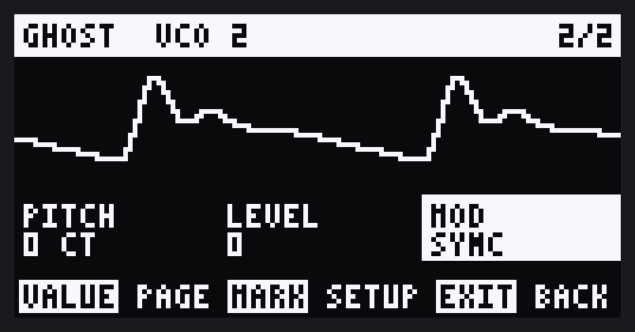

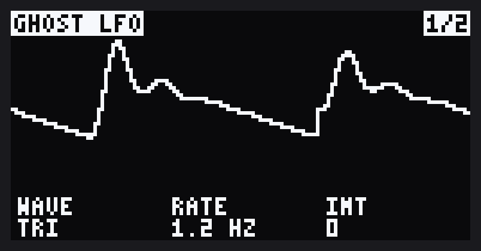

Programs
A program is a whole sound: every GHOST setting and its VOICES. GHOST comes with 20 and has room for 16 of yours. Press RECORD SETTING on a GHOST screen to open GHOST PROGRAMS. VALUE picks an entry, MARK opens it and EXIT goes back. RECORD SETTING again closes it.
- LOAD PROGRAM: turn VALUE and each program loads and plays as you pass it, so you can hear it while you choose. MARK keeps the one you are on. EXIT puts your own sound back.
- SAVE PROGRAM: pick one of the 16 slots and press MARK to name it. The name starts as the slot (
U01). VALUE turns the letter, pressing it moves on, CTRL 1 moves along the name, CTRL 2 changes the letter and DEL rubs one out. MARK saves and EXIT cancels. Saving over a slot that is in use asks first. - PERSIST PATCH CHANGES: GHOST starts up with the sound it has now, every time you turn the SP on. Until you choose this, GHOST starts with its own default sound. Loading a program or turning a dial doesn't change what is kept until you choose this again.
Your programs are saved on the SP and are the same in every project.
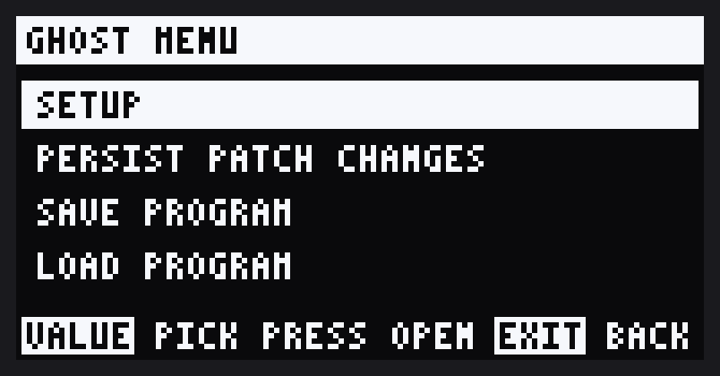

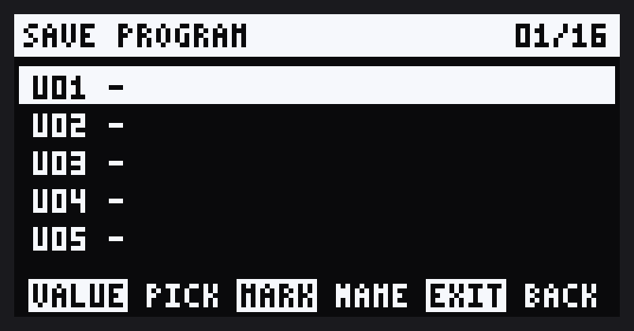

Recording its dials
GHOST records dial moves the way MIDI Controls does, against the pattern, so a sound can change as the pattern plays.
- SHIFT + VALUE on a GHOST screen switches recording on or off. A REC label shows beside the page number while it is on.
- Turn a dial while recording and it is recorded from then on, until you switch recording off. Turn it when you aren't recording and it holds your value until the pattern comes round again.
- An A beside a setting means it has recorded moves in this pattern.
- DEL + turn a dial clears that setting's moves in this pattern. ROLL + DEL + FX1..FX6 clears that bank's.
- Recorded moves play whether or not a GHOST screen is open. Leaving the screen, or letting GHOST rest, stops recording.
- They are saved on the SP a moment after you stop recording, one file for each pattern in each project, so they are still there after a restart. SETUP isn't recorded.

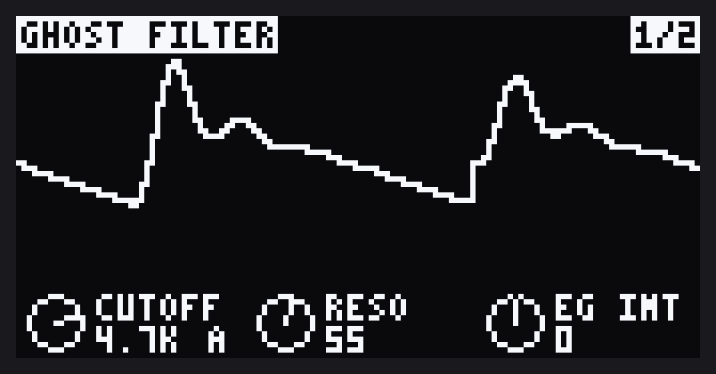
Bigger setups
The SP has one MIDI input and one MIDI output. Two small boxes take it from one synth to a whole rig: a thru box to reach more synths, and a merger to play the SP from more than one.
Cables
The SP's MIDI sockets are 3.5 mm TRS jacks, Type A. Most synths have 5-pin DIN sockets, so you need a TRS-to-DIN adaptor or cable for each SP socket you use. Make sure it is Type A: a Type B adaptor is wired differently and won't pass anything. A synth with its own Type A TRS jacks takes a plain TRS-to-TRS cable.
More synths: a MIDI thru box
Everything the SP sends leaves from its one output, each synth's part on its own channel. A thru box, also called a MIDI splitter, copies that stream to several outputs, one cable per synth. Every synth hears everything and plays only its own channel.
- Daisy-chaining works too: SP to synth A, synth A's MIDI THRU to synth B. It's fine for two or three synths. Each hop adds a little delay, so for more synths a thru box keeps timing tight.
- Synths with only a MIDI IN, like the volcas, can't pass MIDI on. Give them a thru box output, or put them last in a chain.
- Set every synth to its own channel, matching its device in DEVICES. Two synths on one channel both play.
More players: a MIDI merger
To route synths through the SP, their MIDI outputs have to reach its one input. A merger combines two or more MIDI streams into one. Keep each synth on its own channel: that's how the ROUTES grid tells them apart.
- MIDI over USB from a computer or phone is a second input, routed the same way, so you may not need a merger for that.
- Only send what you route. A synth that streams a lot of CC, such as every dial move, shares the merger's bandwidth with the others.
Key summary
| Keys | Does |
|---|---|
| SHIFT + REMAIN | Open or close MIDI SETTINGS |
| SHIFT + FX1..FX6 | MIDI Controls on, bank 1 to 6 |
| VALUE | MIDI page: CTRL page 1/2, 2/2. Menus: pick and open |
| MARK | MIDI page: edit CTRLs. Route: open the CC map |
| SHIFT + VALUE | Record dial moves on or off (MIDI page or GHOST screen) |
| DEL + turn a CTRL | Clear that CTRL's (or GHOST setting's) moves in this pattern |
| SHIFT + DEL + FX1..FX6 | Clear that bank's moves in this pattern (MIDI page) |
| ROLL + DEL + FX1..FX6 | Clear that bank's moves in this pattern (GHOST) |
| SHIFT + DEL | CC map: remove a pair |
| EXIT | Back one level; from the MIDI page, MIDI Controls off; from GHOST, back to DOOM OS |
| ROLL + REVERSE | Wake GHOST in this project, or let it rest |
| ROLL + FX1..FX6 | GHOST's settings, bank 1 to 6 |
| RECORD SETTING | On a GHOST screen: GHOST PROGRAMS (persist, save, load) |
Limits
- MIDI goes out of the MIDI output only. USB MIDI out isn't supported; routing takes MIDI in from both.
- With MIDI Controls on, the CTRL dials don't move the SP's own effect.
- GHOST plays up to four notes at once, and its screens open from DOOM OS's page only.
- 7 devices, 10 synth names of your own plus GHOST, 250 CC names, 64 CC map pairs.
- Two devices on one channel look like one synth to the router.
- Routing passes notes, CC, bend, aftertouch and program change. Clock, start/stop and SysEx stay with the SP.
- A synth that echoes CC back, or a routing loop, may cause feedback. Untested.
- Works only with Roland 5.52 and DOOM OS 0.6.2-alpha (3824), which is built into the patch. The patcher refuses any other file, so new Roland or DOOM OS releases wait until they've been tested.
Support
MIDI Conductor is free to use. If it's useful to you, you can support its development on Patreon.